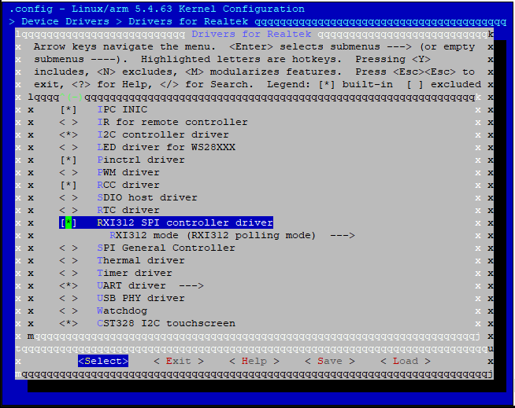
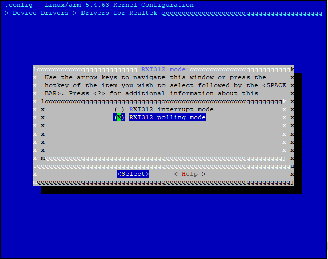

Introduction
The SPI Flash controller drivers are designed for users to access SPI NOR/NAND Flash, currently, only user mode has been supported.
Architecture
The software architectures of SPI Flash controller driver for SPI NOR Flash and NAND Flash are shown in two figures below respectively.
{kind=link}
SPI Flash controller for NOR Flash software architecture
{kind=link}
SPI Flash controller for NAND Flash software architecture
Implementation
The SPI Flash controller drivers are implemented as following files:
File |
Description |
|---|---|
|
SPI Flash controller driver Kconfig |
|
SPI Flash controller driver Makefile |
|
SPI Flash controller driver implementation for NAND Flash |
|
SPI Flash controller driver implementation for NOR Flash |
|
SPI Flash controller driver header file for NOR Flash |
Configuration
DTS Configuration
For SPI Flash controller driver for NOR Flash, the DTS node is defined in <dts>/rtl8730e-spi-nor.dtsi:
spic: spi@44000000 {
compatible = "realtek,rxi312-nor";
#address-cells = <1>;
#size-cells = <0>;
bus_num = <2>;
reg = <0x44000000 0x200>;
interrupts = <GIC_SPI 19 IRQ_TYPE_LEVEL_HIGH>;
spi-max-frequency = <100000000>;
flash0: flash@0 {
/* NOR Flash configurations */
};
};
For SPI Flash controller driver for NAND Flash, the DTS node is defined in <dts>/rtl8730e-spi-nand-128m.dtsi or <dts>/rtl8730e-spi-nand-256m.dtsi:
spic: spi@44000000 {
compatible = "realtek,rxi312-nand";
#address-cells = <1>;
#size-cells = <0>;
bus_num = <2>;
reg = <0x44000000 0x200>;
interrupts = <GIC_SPI 19 IRQ_TYPE_LEVEL_HIGH>;
spi-max-frequency = <100000000>;
flash0: flash@0 {
/* NAND Flash configurations */
};
};
The configurations are listed in table below.
Property |
Description |
Configurable? |
|---|---|---|
compatible |
ID to match the SPI Flash controller driver with SPI Flash controller device |
No |
#address-cells |
Address cells for Flash node |
No |
#size-cells |
Size cells for Flash node |
No |
bus_num |
SPI bus number |
No |
reg |
Register resource |
No |
interrupts |
SPI interrupt, for interrupt mode of SPI Flash controller driver for NOR Flash, reserved for SPI Flash controller driver for NAND Flash |
No |
spi-max-frequency |
SPI max frequency in Hz, reserved |
No |
Note
Above DTS files will be auto selected after chip is chosen, do not change the DTS configurations if not necessary.
Build Configuration
Select Device Drivers > Drivers for Realtek > RXI312 SPI controller driver:
{kind=link}

Specially for NOR Flash, select Device Drivers > Drivers for Realtek > RXI312 SPI controller driver > RXI mode as required:
{kind=link}

Note
The RXI312 mode is only for SPI Flash controller driver for NOR Flash and it will be ignored for SPI Flash controller driver for NAND Flash.
APIs
APIs for User Space
N/A.
APIs for Kernel Space
The SPI Flash controller driver for NOR Flash provides spi_nor hooks to SPI NOR Flash driver, the prototypes of these hooks are defined in <linux>/include/linux/mtd/spi-nor.h:
API |
Description |
|---|---|
read_reg |
Read data from the SPI NOR Flash register |
write_reg |
Write data to the SPI NOR Flash register |
read |
Read data from the SPI NOR Flash |
write |
Write data to the SPI NOR Flash |
erase |
Erase a sector of the SPI NOR Flash |
The SPI Flash controller driver for NAND Flash provides spi-mem interface for SPI NAND Flash Core in MTD framework, the spi-mem interface is defined in <linux>/include/linux/spi/spi-mem.h:
API |
Description |
|---|---|
spi_mem_exec_op |
Execute a memory operation |